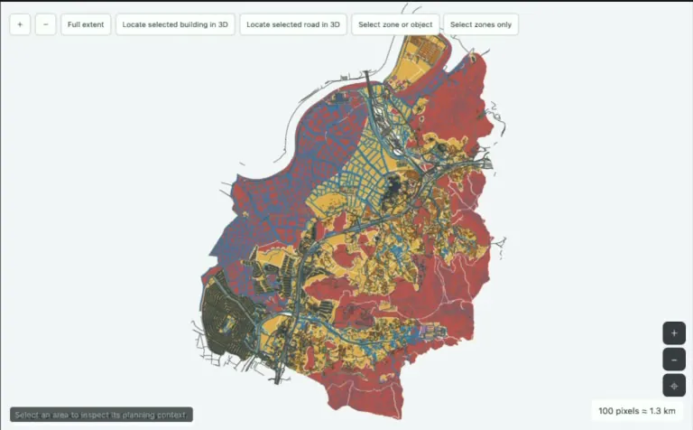
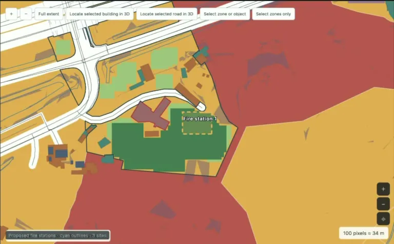
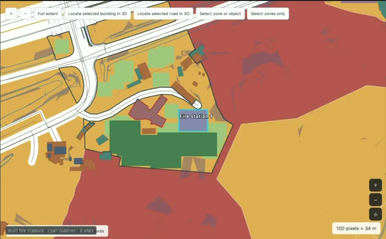
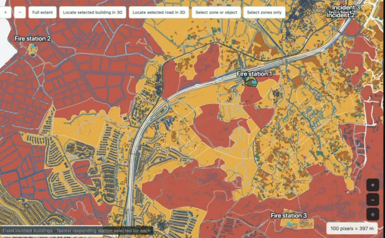
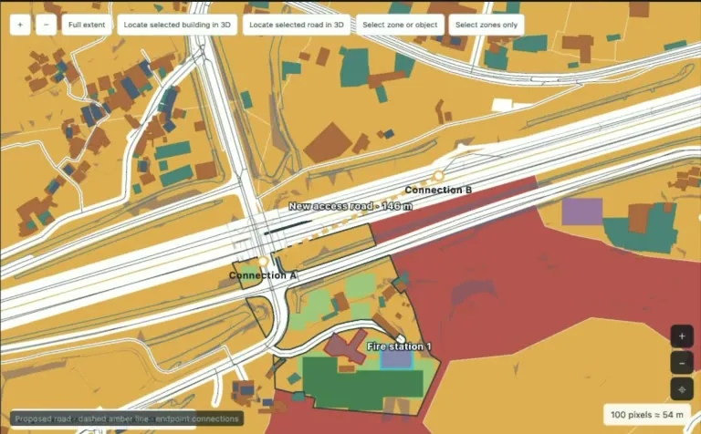
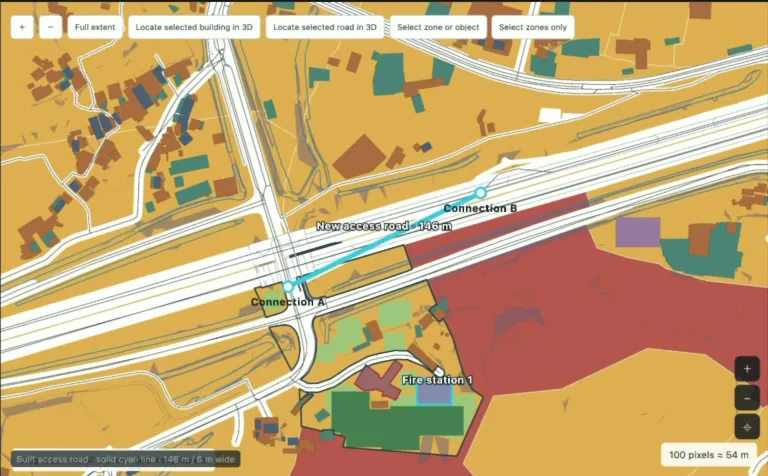
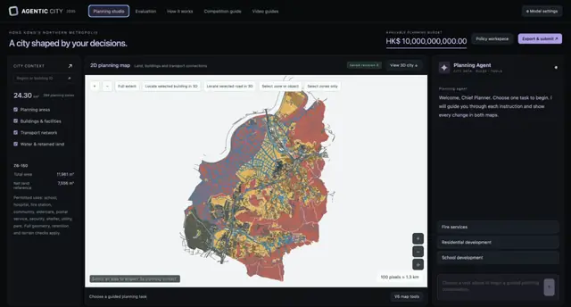

Fire services
4.92→3.44min
mean response −30%
Names three eligible sites, approves construction, later proposes one ~146 m access road.
Agentic City is an agent-native planning studio for Hong Kong's Northern Metropolis. A plan is built, priced, checked and submitted here, not drawn on a slide.
Live illustration drawn from the published plan. The traffic is not simulation output.
01 / THE IDEA
Zoning, permitted uses, buildable land, demolition and pond-filling rules, the road graph, capacity and prices are machine-readable. Every operation is checked, priced, versioned and undoable, and the 2D plan and 3D city are two views of one plan.
You describe an intent; the assistant turns it into a concrete proposal and its cost, then stops. Nothing is built until you approve it. Spending is the boundary between conversation and consequence.
A submission is machine-readable, and the committee loads it into an Economic World Model where households, firms, investors and service organisations live inside it.
The planning agent helps you operate the city. The city agent lives in it. The first makes the tool usable; the second is what makes the city agentic.
03 / THE CONTRACT
The agent proposes, the human approves, the core executes. The whole product rests on that contract, and it is why a language model can be given write access to a city at all. Below is the demo's fire-services scenario, replayed as it was recorded. The click is yours.






A replay of the demo's guided fire-services scenario: the instructions, prices and travel times are the demo's own. To drive the real studio: open the live demo ↗
04 / THE EVIDENCE
Fire services
4.92→3.44min
mean response −30%
Names three eligible sites, approves construction, later proposes one ~146 m access road.
Residential
46,576residents
+660 resident capacity
Picks a site, demolishes a building, fills a pond, builds six blocks.
School
450places
9.33 min mean journey
Sites a campus on buildable land, assigns three residential origins.
None of these numbers is typed in: the capacity and travel figures are computed on the actual V6 network. In the public demo they are replayed from a pre-validated script; see Scope.
05 / THE LOOP
The loop is the point. Assessment is not a verdict at the end; it is the signal that drives the next revision.
spatial_plan.zip + policies.yaml06 / THE STUDIO
Two films, cut into chapters. Pick the question you care about. The clips stream from the repository's attachments on GitHub.

07 / UNDER THE HOOD
The property that matters is that nothing is stored twice: the 2D plan, the 3D city, the assessment panel and the agent conversation all read and write the same plan state.
Planning agent
City agent
08 / ASSESSMENT AND SUBMISSION
Self-assessment is a working tool, not the final score: it exists so a participant can find the weak part of their own plan before the committee does. Final ranking combines simulated indicators, agent satisfaction and expert review.
spatial_plan.zipmanifest.jsonformat version, CRS, units, planning boundary, base-map version, plan ID, target year 2035, cost totalsplan.gpkgzone functions, buildings and building groups, transport network (new and removed walking, vehicle, bus links)3d/3D Tiles for visualisation, objects matched to plan.gpkg by shared identifierpolicies.yamlpolicies:
- id: "P-001"
name: "Fire service readiness"
objectives: "Improve emergency access"
target_type: "fire_station"
eligibility: ["FS-01", "FS-02", "FS-03"]
target_count: 3
support_per_target_hkd: 6000000
areas: ["Z6-150", "Z6-129", "Z6-232"]
period: "2030-2035"Example abridged from the challenge site. Both files are generated and validated by the system from the participant's final plan. There is no presentation deck in the pipeline.
The studio organises self-assessment in these seven groups; the nine evaluation dimensions and seven scenario families of the final are on the challenge page: Evaluation ↗
09 / SCOPE
This is a demonstration of the intended system, and it is worth being precise about which parts are real. The films show the interface and the workflow; they do not expose the implementation. The platform's source code, city data and compiled model are not published.
10 / ROADMAP
The demo is not a cut-down version of the final product. It is the interface contract of the final product, with the reasoning replaced by scripts. The roadmap is the order in which the scripts get replaced by real machinery.
Phase 1 · now
Guided scenarios replay fixed, pre-validated steps. The city model, rules, pricing, budget ledger, capacity arithmetic and 2D/3D synchronisation are real; the reasoning is scripted and the indicators are precomputed.
What it provesA planning decision can be expressed as an intent, priced, approved and reflected in the city within one workspace.
Phase 2
Replace the script with the loop the interface already assumes: a model connection, a stable tool surface, indicators recomputed from the revision, refusal, and exported files that need no hand-repair.
Exit criterionA participant with no prior knowledge completes a small plan in natural language, with no preset prompts, and the exported files pass validation.
Phase 3
The plan becomes a running environment. Household, firm, investor, developer and service agents act inside the submitted spatial and policy conditions, and the assessment stops being a scoreboard of assets and becomes an observation of outcomes.
Exit criterionThe same submitted plan, run twice, produces the same result; and two plans that score identically on static capacity produce visibly different social outcomes.
Phase 4
Reproducible scenario packs and reference results, a submission validator anyone can run, a public gallery of strong plans with their simulated outcomes, and reusable region packs.
Must keepReproducibility.
Nothing happens to the city without a cost, a rule check and a human decision.
THE CHALLENGE · TRACK 3
Participants act as Chief Planner of a 24.3 km² slice of the Northern Metropolis: the Lok Ma Chau Loop, San Tin and Ngau Tam Mei, with parts of Mai Po and Fairview Park. They deliver a complete 2035 spatial plan plus a policy package inside a fixed HK$ 10,000,000,000 budget. Agentic City is the world behind Track 3 of the Economic World Model Challenge, which opens in December 2026.
Part of the Agentic City Global Challenge for Hong Kong's Northern Metropolis, organised by Shenzhen Loop Area Institute and The Chinese University of Hong Kong, Shenzhen, with the Shenzhen Big Data Research Institute as technical partner.
City model compiled from official Hong Kong mapping and water data (iB1000), OpenStreetMap road and transit networks (© OpenStreetMap contributors), and public building and land-use records.